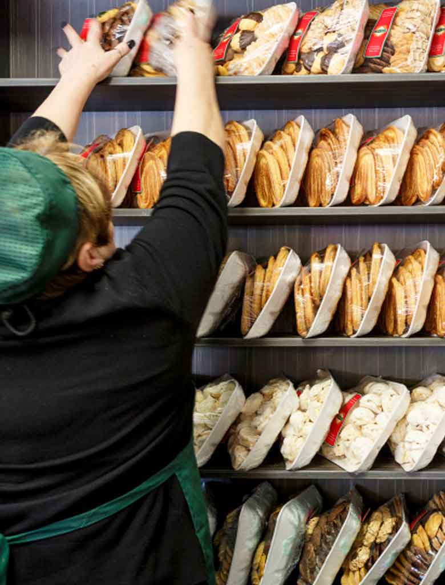
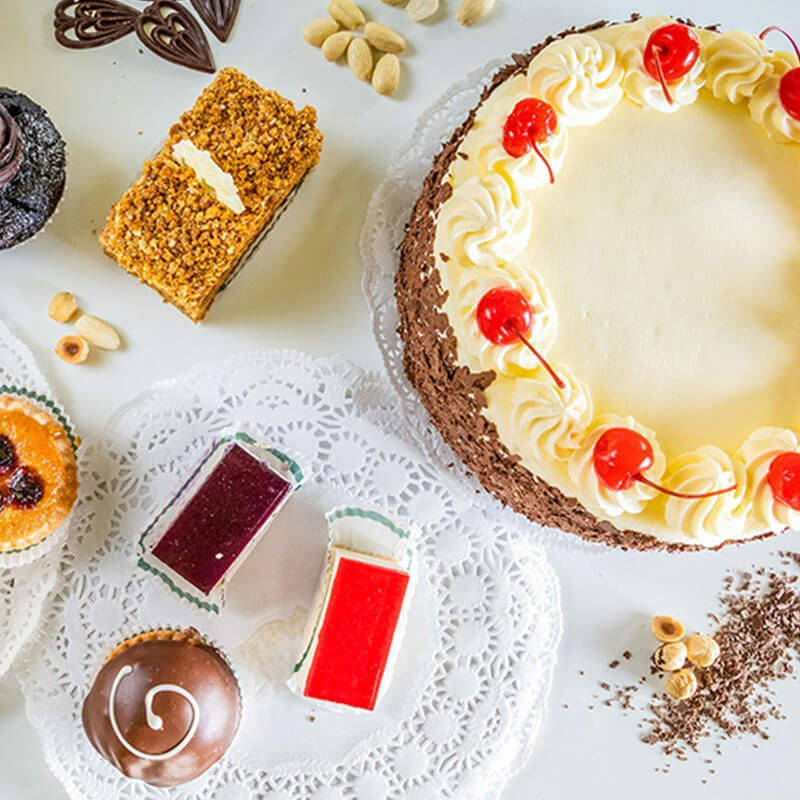

1957Established, Northbridge
Perfected since 1957.
Established in 1957, Corica Pastries has consistently been delighting customers with our world-famous apple strudels, continental and custom-made cakes, and a choice of unique pastries.
Using recipes perfected since 1957, we offer our customers unique strudels, cakes and pastries. We still bake the same way today.
Read our story
